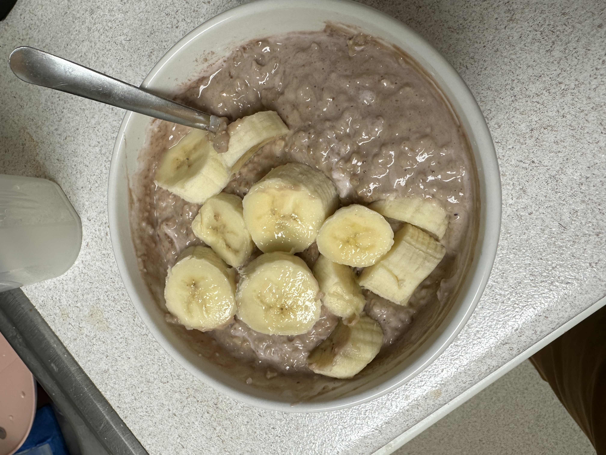

My Morning Oatmeal Recipe

Description:
This is the general formula behind the protein oatmeal that
has been a go-to breakfast/meal 1 for me for a while now. Maybe a
year or two. It's microwave oats with protein powder and some
optional variances such as yogurts, nut butters, and fruits.
You can go crazy and put whatever you want in oats but today
as an example I'll be describing the recipe for a basic chocolate
protein oatmeal with banana and yogurt.
Ingredients
- 2 scoops (64g) whey
- 60-100g quick oats (you can use regular but
they will not do as well in the microwave
- water from the sink
- Some nonfat yogurt variety
- One banana
Steps:
- First get a microwave-safe bowl and put it on your food scale
- Weigh out how much oats you want to use depending on your macros.
I usually use 80g but often that's when serving other stuff along
with the oats. If I'm not feeling like cooking and just planning
to eat oatmeal for my first meal while I'm bulking now I will use
100g oats.
- Take your bowl to the sink and fill it with water until the oats are
submerged. Getting the amount of water right will take a little practice,
but with quick oats it will probably be more than you think. By using
a lot of water, the quick oats will swell in the microwave and leave
your oatmeal with more volume, making it more filling.
- Microwave on high for two minutes
- Get your bowl back on the scale and add around 64g whey.
If I'm feeling like serious bodybuild I won't actuall add whey
I will just cook egg whites on the side for protein but that's
another recipe
-
Add 60-120g nonfat yogurt. If you want to ball you can use a chobani
zero-sugar nonfat yogurt cup which will have a sweeter flavor
- This is your opportunity to add other liquid/mixable type
ingredients but I'll leave that up to you. Suggestions include
peanut butter, almond butter (depending on your fats), mashed
banana for a banana flavor, honey, stevia, cinnamon, etc.
- Mix your shit up until homogenized
- Use your spoon you've been doing all this with to slice up a
banana onto the top. You could also add whatever other fruit you
desire as a topping. I have also done almonds/walnuts etc.
- Serve
Back